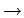
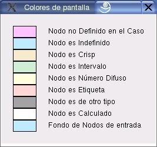

Significado de los colores
El cuadro de diálogo que muestra la figura 9.2 explica cuál es el significado de los colores que pueden tomar los nodos en la interfaz gráfica. Para activar esta opción el usuario puede ejecutar la secuencia de pasos siguiente, o emplear el ícono de la barra de herramientas:
Proyecto  Opciones de configuración Selecciones Mostrar Colores Si Aplicar
Se hace click con el botón izquierdo del ratón sobre la celda correspondiente.
Los principales componentes del cuadro de diálogo de configuración se explican a continuación:
- Opciones:
- Muestra los listados de opciones de configuración.
- Editar:
- Permite editar la opción seleccionada.
- Aplicar:
- Aplica a la interfaz la opción seleccionada con su valor editado
- Leer Predeterminado:
- Aplica a la interfaz las opciones guardadas en el archivo de configuración predeterminada.
- Escribir Predeterminado:
- Guarda en el archivo de configuración predeterminada las opciones actuales.
- Configuración por defecto:
- Aplica a la interfaz las opciones por defecto.
Figura 10.2:
Diálogo para mostrar el significado de los colores usados en la interfaz gráfica
|

|
Oscar Duarte
2005-10-17